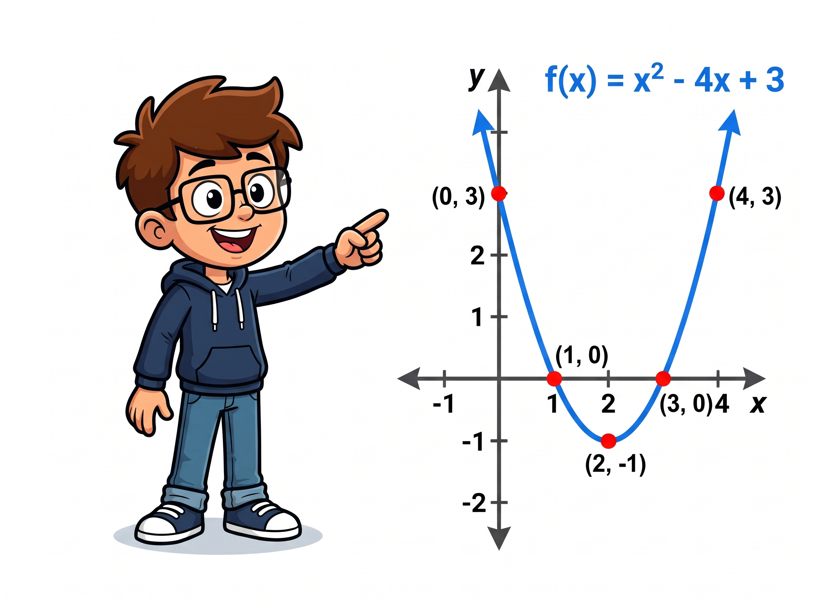
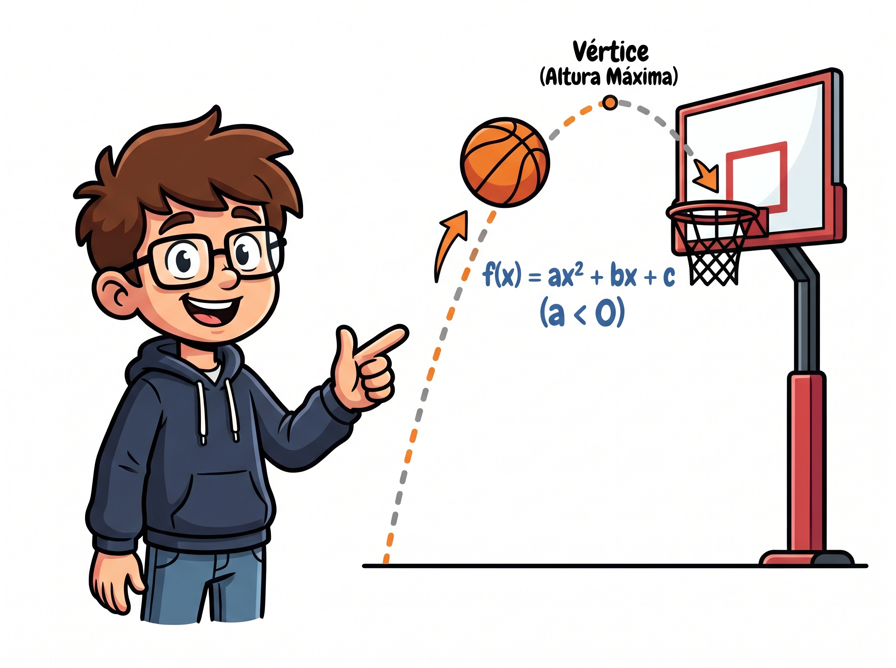
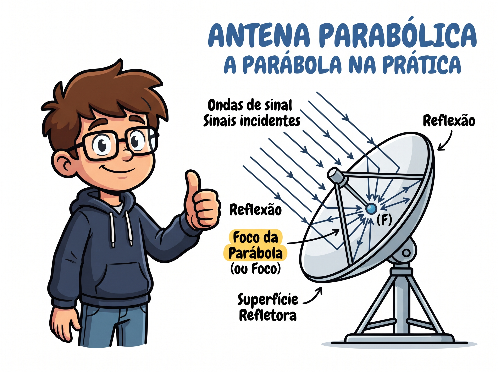

O que é uma Função Quadrática?
Conceito
A Função Quadrática, ou função do 2º grau, é qualquer função polinomial com lei de formação:
f(x) = ax² + bx + c
Onde a, b e c são números reais e a ≠ 0:
- a define a abertura e a orientação da concavidade da parábola.
- b indica a inclinação da parábola ao cruzar o eixo Y.
- c é o termo independente: mostra o ponto exato
(0, c)onde a curva corta o eixo Y.
Elementos da Parábola
O gráfico de toda função do 2º grau é uma curva simétrica chamada parábola:
- Concavidade para cima (a > 0): A parábola tem formato de "U" e possui um ponto de mínimo.
- Concavidade para baixo (a < 0): A parábola fica invertida e possui um ponto de máximo.
- Raízes (Zeros): Valores de x onde
f(x) = 0, calculados pela fórmula de Bhaskara (Δ = b² - 4ac). - Vértice V(xᵥ, yᵥ): Ponto de virada da curva, dado por
xᵥ = -b / 2aeyᵥ = -Δ / 4a.
Construindo a Parábola na Prática
Observe o exemplo da função f(x) = x² - 4x + 3 (onde a = 1, b = -4 e c = 3).
Como a > 0, a concavidade é voltada para cima. Veja a tabela de pares ordenados:
| Valor de x (Entrada) | Cálculo: f(x) = x² - 4x + 3 | Valor de y (Saída) | Par Ordenado (x, y) |
|---|---|---|---|
| 0 | (0)² - 4(0) + 3 = 0 - 0 + 3 | 3 | (0, 3) — Intercepto Y |
| 1 | (1)² - 4(1) + 3 = 1 - 4 + 3 | 0 | (1, 0) — 1ª Raiz |
| 2 | (2)² - 4(2) + 3 = 4 - 8 + 3 | -1 | (2, -1) — Vértice (Mínimo) |
| 3 | (3)² - 4(3) + 3 = 9 - 12 + 3 | 0 | (3, 0) — 2ª Raiz |
| 4 | (4)² - 4(4) + 3 = 16 - 16 + 3 | 3 | (4, 3) |

Parábola correspondente aos pares ordenados da tabela acima, com vértice de mínimo em (2, -1) e raízes em x = 1 e x = 3.
A Função Quadrática no Nosso Cotidiano
As curvas parabólicas estão presentes na física, na engenharia e nos esportes sempre que existe aceleração ou reflexão de ondas:
1. Lançamento de Projéteis e Esportes

Quando um jogador chuta uma bola de futebol em direção ao gol ou lança uma bola de basquete, a trajetória descrita no ar sob ação da gravidade forma uma parábola com concavidade para baixo (a < 0).
O vértice da função indica exatamente a altura máxima que a bola atinge antes de começar a cair.
2. Antenas Parabólicas e Faróis

O formato curvo das antenas parabólicas e dos refletores de faróis automotivos utiliza a propriedade geométrica do foco da parábola.
Todos os sinais de satélite que batem na superfície curva são refletidos para um único ponto central (o receptor), garantindo máxima intensidade de sinal.